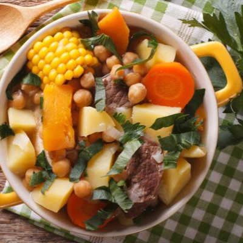

Puchero

This is one of my favourite dishes of all time. It is nothing like the real puchero but it's very tasty.
Ingredients
- Sausage
- Baked beans
- Onions
- Garlic
- Tinned tomatoes
- Celery
Steps
- Fry the onion, celery and garlic in a pan with some olive oil
- Add the tinned tomatoes, cook until reduced
- Add the chopped sausage
- Serve with rice